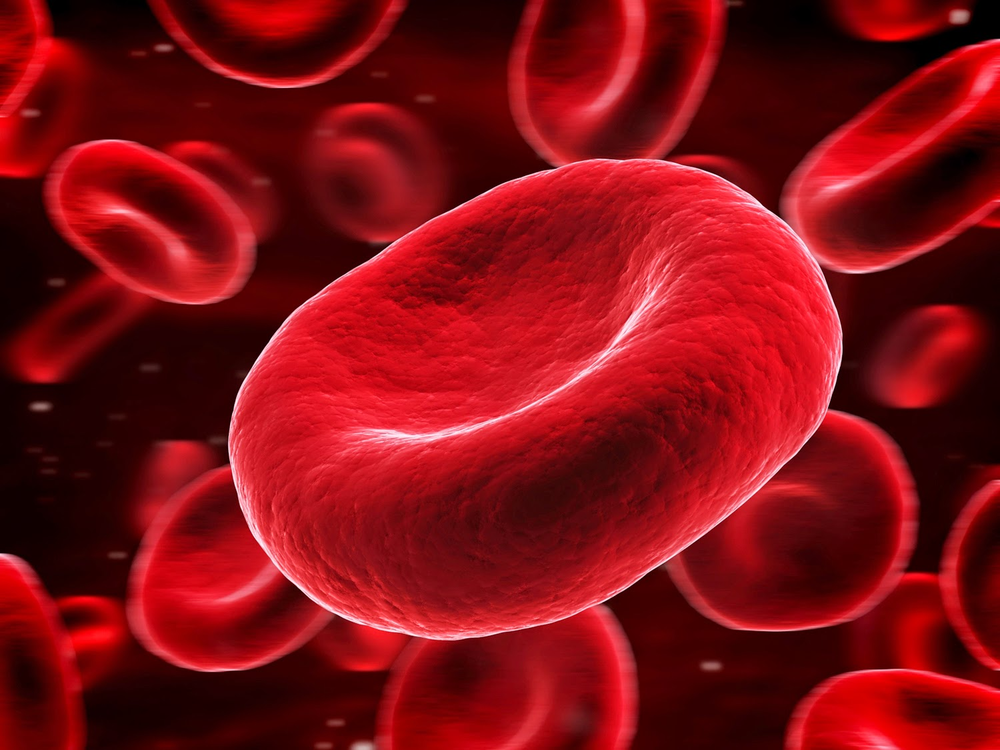
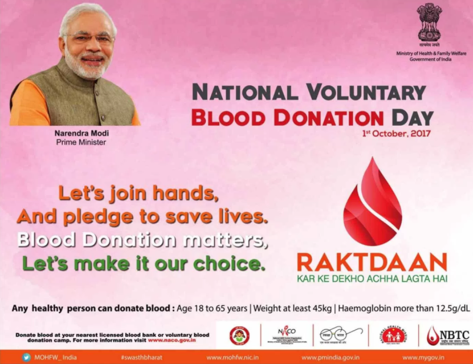

The Thai Red Cross Society is calling on people to donate blood before the upcoming Songkran Festival,
when supplies will be needed for life-saving medical services.
>As millions of people usually travel during the Songkran holidays,
There is a greater risk of road accidents and large numbers of casualties.
>The Songkran road toll is expected to be so high that the relevant agencies have resolved to declare the holiday
period "Seven Dangerous Days" in order to promote road safety.

>The experience of the past, however, is that adequate blood stocks will be needed to help save lives.
>At least one hospital already has critically low blood supplies.
>Thai Red Cross Society, which operates the National Blood Centre,
said this week that almost 200 hospitals had asked for blood units.
>On their requests, "we will have to provide between 3,000 and 4,000 blood units per day during Songkran,” an official said.
>The Red Cross said that, statistically, group O is the most in-demand blood type, followed by B, A, and AB.
>During the seven days of Songkran, at least about 28,000 blood units will be required in storage.
>People who plan to go on vacation during this period are advised to donate blood beforehand.
IN INDIA
BLOOD DONATION THOUGHTS BY "NARENDRA MODI" SIR

Prime Minister Narendra Modi on Saturday pitched for raising awareness about the
importance of blood donation and asked his "young friends" to take lead in this.
In his tweets on the World Blood Donor Day,
he said blood donation was a great service to society and congratulated those who donate blood.
"On World Blood Donor Day I congratulate every one who keeps donating blood. It is a great service to society."